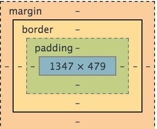
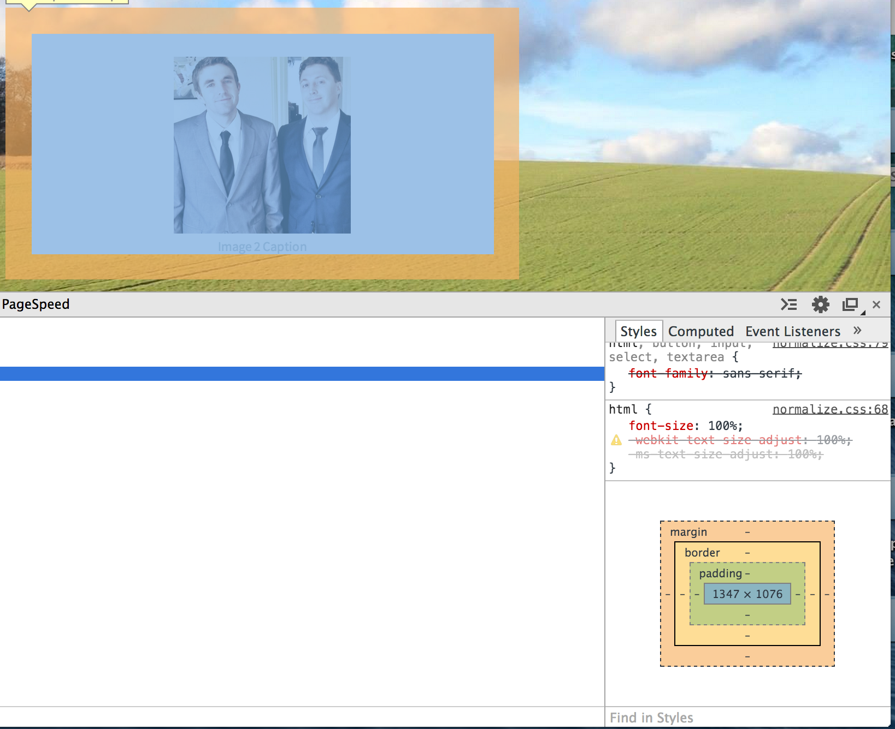
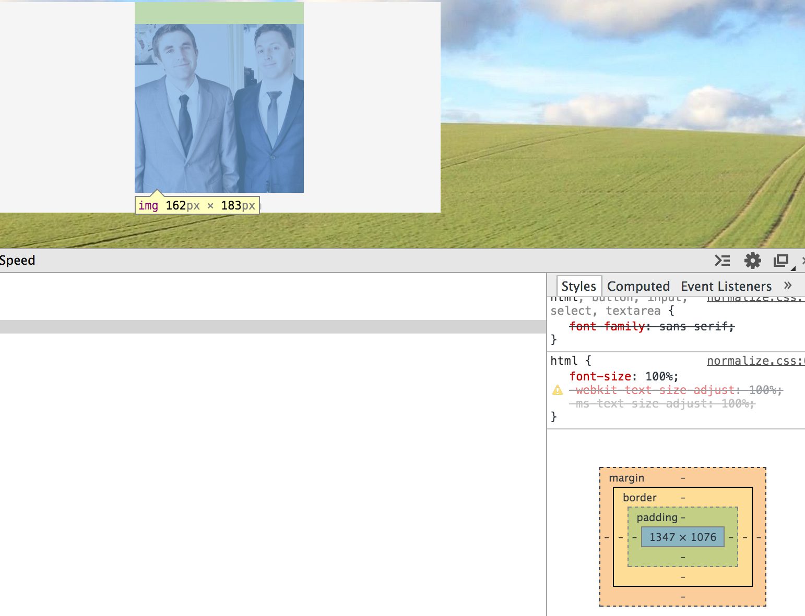

Margin, Padding, and Border--what is it? If you are anything like me, then when you first heard about these they seemed somewhat interchangeable. The more familiar you become with programming, the more you recognize they are not.
One of the clearest illustrations I have seen of this is through using the Chrome Dev Tools and seeing how a container is layed out. See the image below
Notice that the three components, from the inside out, are padding, border, then margin.
How do you use these? The margin allows you to have distance between your element and the next element. See the image below.
Notice margin allows us to specify that we want the background to be all white of our container and put space between the container and the other items.
If we were to use padding on this component, then we are only creating space within the container from the edge of it. We could potentially have other containers right next to the white of our container. Below is an use of padding to create space between the image and the top of the container.
The last component is border, which is often not used unless people want a fill line to outline the shape of their container. The border will trace the edge of the container and anything on the outside pertaining to this container will be the margin and the spacing immediately inside of it will be the padding.
Hopefully this has been helpful. Let me know what could be better within this.